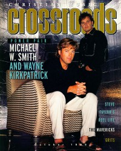

CMnexus
:
Contemporary Christian culture, music, and media.
Browse Magazines
Browse Profiles
cmnexus.org
CM
nexus
→
Profiles
→
K
Wayne Kirkpatrick
On the cover

October 1995
Christian Music Crossroads
Media coverage:
May 1989 in
CCM
"Christian Musician: Walk Softly And Carry A Big Hit", by
Dan Keen
Oct 1995 in
Christian Music Crossroads
"The Home Team", by
Calvin Gilbert
May 1999 in
CCM
"What Makes Music Christian?: What Makes Music Christian?", by
Steve Rabey
May 2000 in
CCM
"Secret Ambition", by
Laura Harris
Dec 2000 in
CCM
"Story Behind the Song: Coming From Somewhere Else", by
Debra Akins
Jul 2003 in
CCM
"25 Powerful People Who Have Made Christian Music What It Is Today: Wayne Kirkpatrick"
Dec 2012 in
CCM Digital
"Musicians Corner: Gear Guide: Wayne Kirkpatrick, Bryan White"
Albums & reviews:
2000
:
The Maple Room
May 2000 in
YouthWorker
, by
Dave Urbanski
Jun 2000 in
CBA Marketplace
, by
Happy Medina
Jun 2000 in
CCM
, by
Lou Carlozo
Aug 2000 in
Profile
, by
Katherine L Gutwein
2000
:
Coming From Somewhere Else
with
Gordon Kennedy
,
Phil Madeira
,
Billy Sprague
Nov 2000 in
CCM
, by
Melissa Riddle
Award Summary
(
Nominations
/
Wins
)
Dove Awards
1991 Dove Awards
Songwriter
1992 Dove Awards
Song
: "Place In This World"
Songwriter
1994 Dove Awards
Song
: "Give It Away"
Producer
1995 Dove Awards
Song
: "Children of the World"
Songwriter
Producer
1996 Dove Awards
Song
: "Man After Your Own Heart"
Inspirational Recorded Song
: "Man After Your Own Heart"
1997 Dove Awards
Song
: "I'll Lead You Home"
Books about Wayne Kirkpatrick
"
Wayne Kirkpatrick
" in
The Encyclopedia of Contemporary Christian Music
(
Mark Allan Powell
,
2002
)
CMnexus
(noun)
The magazine index
of modern music
and Christianity
© 2011 CMnexus. Last updated September 2019.
Contact:
Rants and other correspondence to:
editor -AT- cmnexus
-DØT- org
About